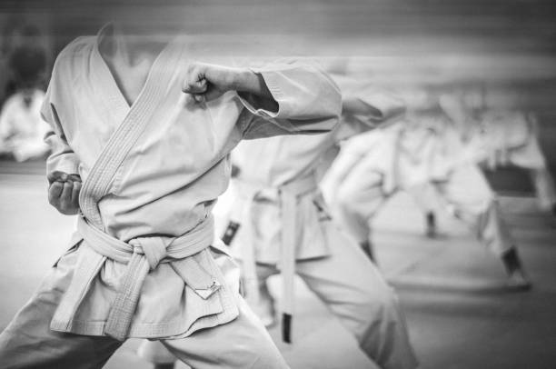

Though Martial Arts Filmography expands even further beyond the bygone era of the 60s, we begin our journey here. The 60s were filled with martial arts films that attempted to push the beauty of the Peking Theater Opera as it had reached the end of its twilight years. As such, martial arts films that adorned the 60s to early 70s take more of a dancelike choreography, focusing on pauses in between blows and dodges for the audience to bask in the glory of the human form.
The Peking Opera was - as it has fallen far to the wayside in the modern era - the dominant form of the Chinese opera. It prided itself on its magical combination of instrumentation, vocals, martial arts, acrobatics and mimery. It arose in Beijing before becoming fully realized and recognized during the 19th century. While it may have fallen off significantly since its golden era, it has since been preserved in Taiwan while also spreading to both Japan and the United States. Peking rating and skill were based on the beauty of respective moments, while performers injected meaning and definition with each movement in synchronization with the performance's music to help convey the plot. Sadly, Peking Opera begun a steady decline during the latter half of the 20th century. Performance quality deteriorated while the opera also failed to capture moden life in its art form - among other reasons.
One-Armed Swordsman + Return Of The One-Armed Swordsman
The Sword of Doom
Yojimbo
Come Drink With Me
Dragon Inn
The Bells of Death